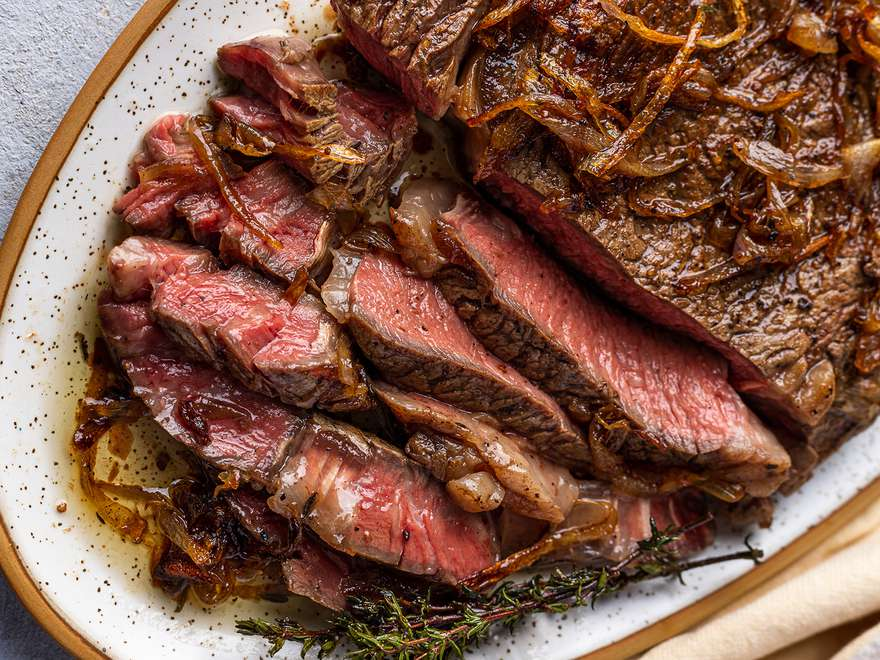

Butter Basted Steak

Description
Steak sauteed in a pan is maybe the simplest way of preparing a steak. To bring this method to the next level, butter basting can be used to infuse the meat with rich, garlic butter flavor in every bite
Ingredients
- Thick-cut rib-eye steak
- Ghee
- Unsalted Butter
- Garlic
- Salt and Pepper
Steps
- Salt steak generously 4-24 hours before cooking.
- Heat pan to medium high heat. Cast iron is best.
- Pat steak dry to remove moisture. Place steak on pan and brown one side well
- Flip steak and brown the other side maybe 5 more minutes
- Reduce heat to low, add unsalted butter and garlic cloves to pan to lower the temperature slightly
- Using a spoon, coat the steak continuously with the melted butter, angling pan to one side to ladle it over the steak
- Remove steak and let sit for 5 minutes before cutting